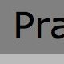

Complete index of all articles
Getting network access in the garden
22 Jun 2012
It took quite some work to get a network connection in the garden. How did I manage?The Kippencam --- starting a new project
04 Jun 2012
I am starting a new project: a solar-powered webcam in the chicken coop.Things to do on this blog
04 Jun 2012
What I still intend to doListing life goals with 43things
22 Nov 2011
I started a list of things I want to do some time on 43things.org.Easy new page creating using Emacs and Template.el
14 Nov 2011
How I installed Template.el to help make blogging quick in EmacsMaking a personal website using Nanoc
November 12, 2011
How I used Nanoc to create this personal webpageInstalling sitecopy on OS X Snow Leopard and using it with Nanoc
November 12, 2011
I use Sitecopy to upload my Nanoc site to the server. This is how I managed to do it.All older articles...